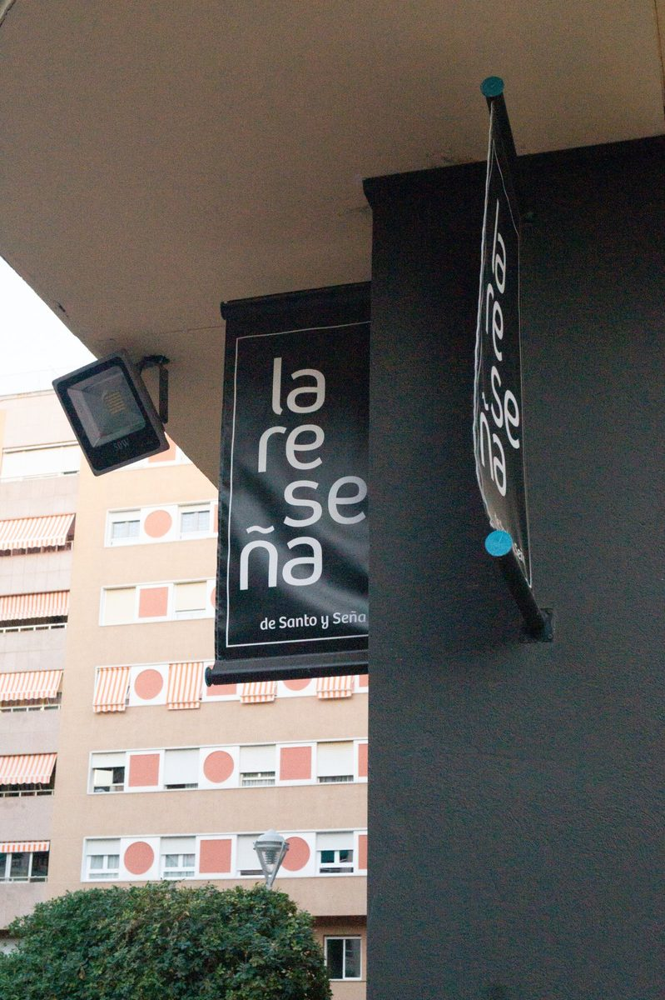
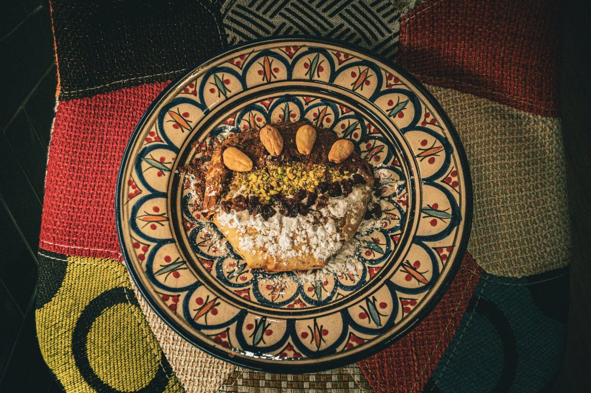

Nuestra historia
Más que un restaurante
Un espacio donde la cocina cordobesa se abre al mundo — con honestidad, sabor y mucha pasión
El origen
Nacidos de la pasión por la buena mesa
La Reseña nació del sueño de dos personas — Santo y Seña — que querían crear un espacio diferente en Córdoba. Un lugar donde la gente pudiera sentirse como en casa, comer bien y salir con una sonrisa.
Desde el primer día tuvimos claro que no queríamos ser un restaurante más. Queríamos ser ese sitio del que la gente habla, al que vuelven, y que recomiendan con orgullo.

Nuestra cocina
Donde Andalucía abraza el Mediterráneo
Nuestra propuesta gastronómica es una conversación entre culturas. La cocina andaluza — el salmorejo, el rabo de toro, los flamenquines — convive en armonía con especialidades marroquíes como el couscous, el tajine o la pastella moruna.
Usamos productos de temporada, proveedores locales y recetas que respetan el sabor original mientras añaden nuestra propia voz.
Explorar la carta
El espacio
Un ambiente pensado para disfrutar
Nuestro local en el corazón de Córdoba fue diseñado para que te sientas cómodo. Luz natural, materiales cálidos, una barra de azulejo verde que invita a tomarse algo tranquilo y una sala donde poder celebrar.
Con capacidad para grupos y eventos privados, somos el escenario ideal para cualquier celebración especial.

Lo que nos define
Nuestros valores
Trabajamos con proveedores de proximidad y productos de temporada para garantizar frescura y calidad en cada plato
Creemos en el servicio atento y personal. En La Reseña no eres un número de mesa — eres parte de nuestra familia
Cocinamos con recetas de alma. Sin atajos, sin artificios. Solo sabor honesto que te hace volver
¿Quieres visitarnos?
Te esperamos en Córdoba
Haz tu reserva y ven a descubrir por qué somos el restaurante del que todos hablan
Reservar mesa